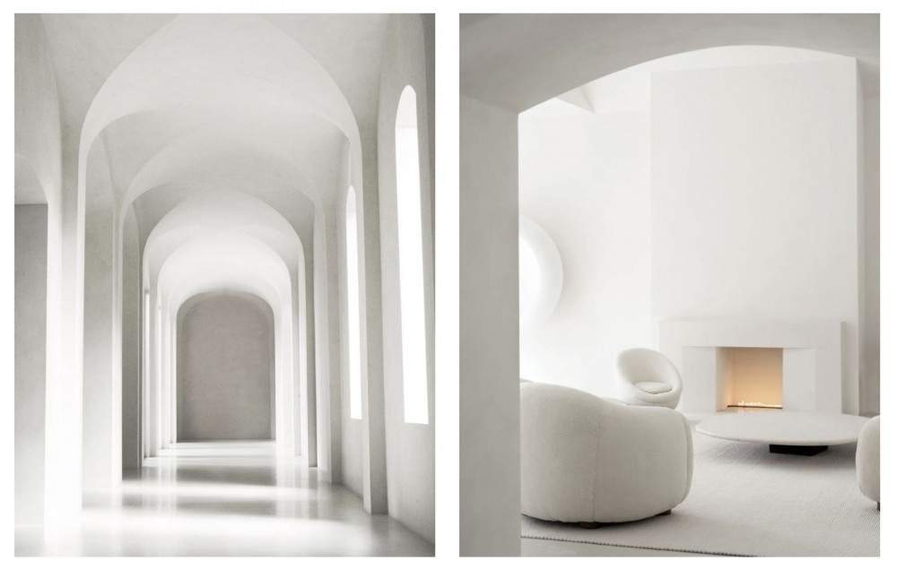

Basic Instincts
DIVORCE BY DESIGN: SPECULATING ON THE FUTURE OF THE KARDASHIAN-WESTS’ MINIMALIST MANSION

The Kardashian-West home designed by Axel Vervoordt photographed by Jackie Nickerson. Courtesy Architectural Digest/ Condé Nast
It was April 2019 when Kim Kardashian-West, dressed in a dove-toned skin-tight two piece with the approximate shape of a particularly sexy Star Trek costume, allowed Vogue to film inside the home she called a “minimal monastery” — a cavernous ex-McMansion whose interiors, either white or almost white, had been refitted to resemble something halfway between Patrick Bateman’s 55 West 81st Street apartment, and a mental institution from the future. In the foyer, one small smudge about the size of a child’s finger on the hip of her culottes, Kim looked tanned and ultraluminous — somehow both perfect and at ease — as if she had been placed quite suddenly in front of a white photographic background for a shoot, a hot Madonna with three gorgeous, grey-clad children and the carefully-shaded cheekbones of a Patrick Nagel drawing. “There’s no such thing as a lazy day here,” she explained, saying a mouthful not only about the necessary maintenance involved in being Kim, but the staggering discipline required to live in such a house. Her children, playing with Kanye West, appeared frolicking on a cloud-white bed; the hallways, tall and arched, looked green-screen-eerie, like VR. The Kardashian-Wests’ Steinway, which Kim had not learned to play, was the blanched color of a kitchen in a Nancy Meyers movie, putty-ish and faintly 90s. All the tables, very low and very chic, were made of marble. Vibrancy, like laziness, was evidently not a concept held in high esteem in Hidden Hills, Calabasas.